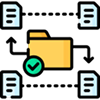

Organiza tus tareas
Colabora en equipo
Monitorea el progreso
Tarea asignada: Keyra Yariely Grijalva Ochoa
Fecha limite: 25 de diciembre, 2025
Prioridad: Alta
Comentarios:
Tarea asignada: Keyra Yariely Grijalva Ochoa
Fecha limite: 25 de diciembre, 2025
Prioridad: Alta
Comentarios:
Crea tareas desde cualquier tablero.
Asigna tareas de manera responsable y establece fechas limites.
Agregar etiquetas de prioridad o de categorias.
Adjuntar archivos, enlaces, carpetas y mucho mas.
Comenta y puedes darle seguimiento real a todas tus tareas
Organiza tus tareas
Colabora en equipo
Monitorea el progreso
La gestión de tareas nunca fue tan fácil. Con TaskColab, podrás lograr mejores resultados.